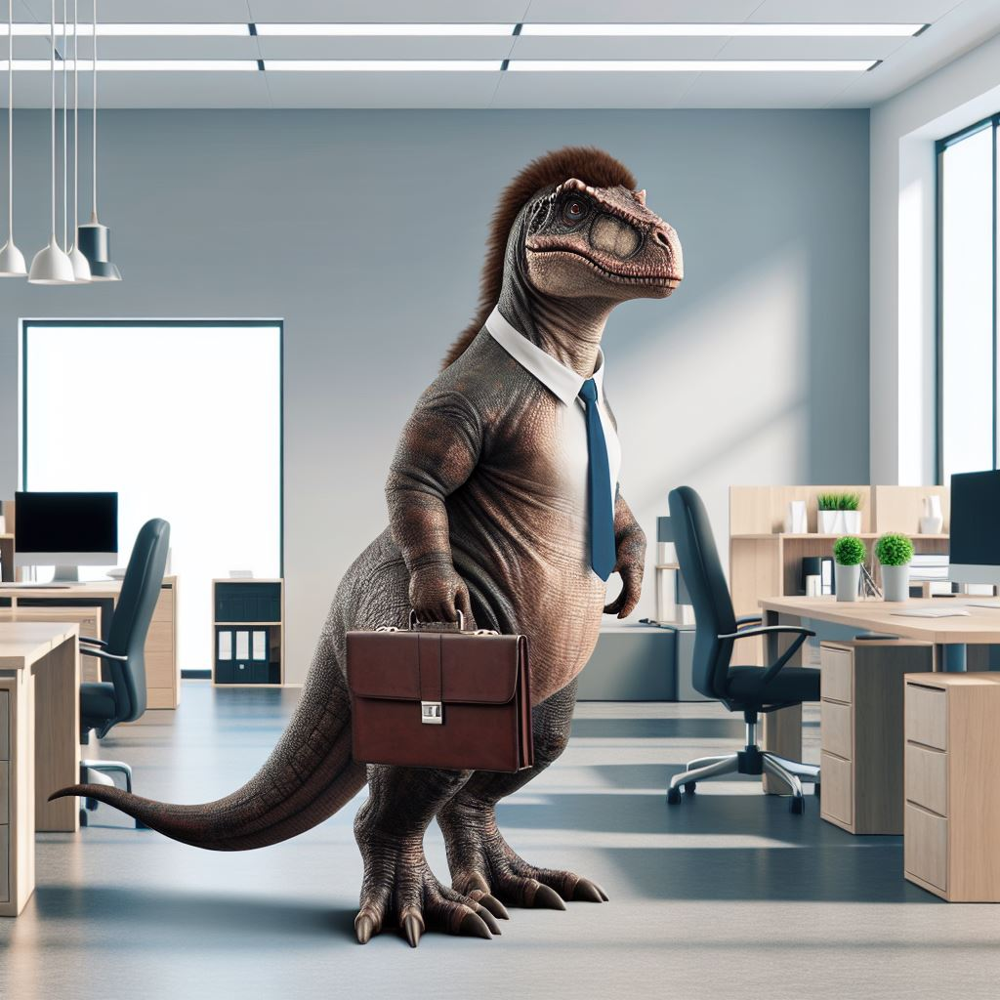

Featured Products
-

Karenosaurus Rex
Karenosaurus Rex is a mighty yet slightly dramatic dinosaur, forever ready to voice her dissatisfaction. With her tiny arms and an oversized sense of entitlement, she’s always on the lookout for an issue to escalate.
$4.99
-

The Witness
The Witness was a dinosaur who met his end when the meteor fell, blissfully unaware of the chaos coming his way. Modern dinosaurs often argue he was the lucky one—never having to deal with the stress of mortgages, taxes, or customer service calls. He went out in one dramatic moment, free from the grind of modern life, leaving others to wonder if it was better to face extinction than to endure endless paperwork and bills.
$29.99
-

Adminosaurus
The Adminosaurus is a creature built for efficiency, but forever trapped in the grind of office life. With its relentless drive to organize, file, and manage, this dinosaur is always a step away from a meltdown. Whether it’s chasing down missing documents, answering an endless stream of emails, or navigating the maze of office protocols, Adminosaurus is constantly on the move, determined to keep things running smoothly.
$19.99